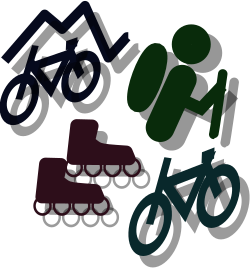

CalTopo
mapping

Το CalTopo ειναι μια πλατφόρμα η οποία προσφέρει την δυνατότητα δημιουργήας χαρτών χρησιμοποιώντας διαφορά και χρήσιμα εργαλεία.
details:Click here
Windy
weather

Το Windy είναι μία πλατφόρμα η οποία αποδίδει με υψηλή ακρίβεια τα καιρικά φαινόμενα ακόμα και σε live χρόνο και με την βοήθεια πολλών ακόμα εργαλείων προσφέρει την καλύτερη πληροφόρηση.
Waymarked Trails
trails

Το Waymarked Trails ειναι μια πλατφόρμα η οποία παρουσιάζει μονοπάτια ανά όλο τον κόσμο με τα ονόματα και κάποιες πληροφορίες για αυτα.